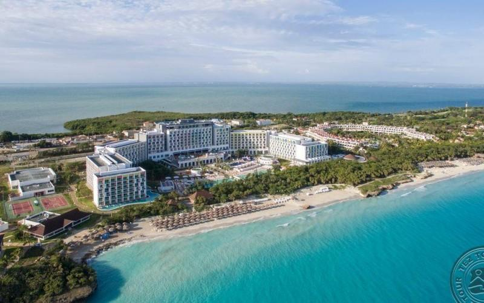
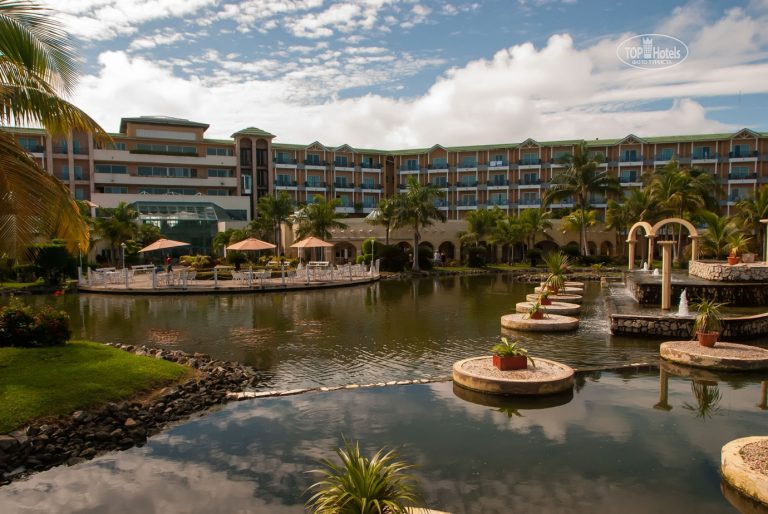
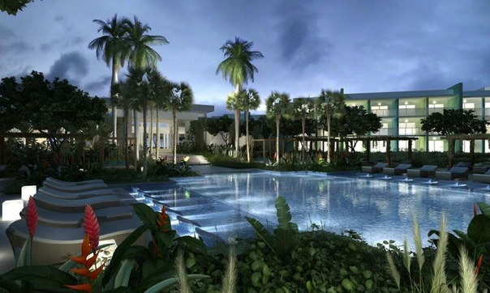
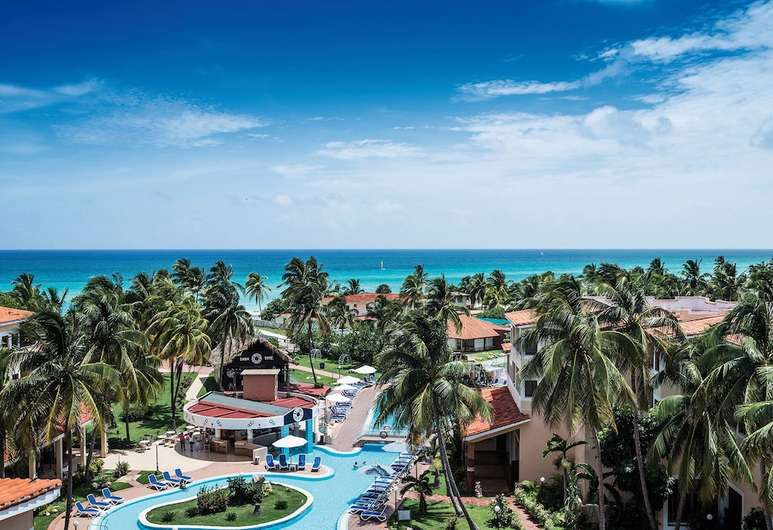

Расположение:
Отель расположен на берегу моря, в 14 км от Варадеро, в 39 км от аэропорта Варадеро, в 175 км от Гаваны.
Размещение:
- Double Room (около 47 кв. м, кровать размера "king-size" или 2 раздельные кровати, ванная комната, балкон)
- Double Tropical (около 47 кв. м, кровать размера "king-size" или 2 раздельные кровати, ванная комната, балкон, вид на сад)
- Junior Suite (около 56 кв. м, кровать размера "king-size" или 2 раздельные кровати, гостиная зона с раскладным диваном, ванная комната, балкон)
- Junior Suite Superior (около 56 кв. м, кровать размера "king-size" или 2 раздельные кровати, гостиная зона с раскладным диваном, ванная комната, балкон)
- Family 2 Bedrooms (состоит из 2 стандартных номеров с отдельными входами)
- Presidential Suite (около 302 кв. м, 2 спальни, гостиная, терраса с джакузи)
Рестораны и бары
Рестораны:
- Ambrosio и La Palapa - главные рестораны (шведский стол, международная кухня)
- Ranchon Brunch La Palapa - ресторан для бранчей (международная кухня)
- La Dorada - ресторан средиземноморской кухни
- La Parrilla - ресторан кубинской кухни
- Manzoku - ресторан японской кухни
- Gourmet El Bosque - ресторан изысканной кухни (дегустационное меню из шести блюд)
- La Dorada midnight snack - полночные закуски (с 23:00 до 06:00) и континентальный завтрак (с 06:00 до 07:00)
Бары:
- Los Arcos - лобби-бар (24ч)
- La Perla - бар около бассейна
- El Rancho и Bohio - бары на пляже
- La Rumba - театр-бар
- Discotheque Gaz53 - бар в ночном клубе
- Star Cafe - кафе
- La Vitola - табак-бар
В номере:
- Wi-Fi (бесплатно)
- ТВ(спутниковое телевидение)
- Кондиционер
|
- Телефон
- Мини-бар (платно)
- Сейф (бесплатно)
|
- Ванна и душ (тропический душ)
- Халат, тапочки
- Фен
|

Расположение:
Отель расположен на берегу моря, в 14 км от Варадеро, в 36 км от аэропорта Варадеро, в 148 км от Гаваны, в 240 км от аэропорта Санта Клары. Построен в 1999 году. Последняя реновация – в 2015 году. Общая площадь территории отеля - 60 000 кв.м.
Размещение:
Отель состоит из главного 5-этажного здания и нескольких 3-этажных бунгало. Всего 350 номеров. К размещению предлагаются номера категорий:
- Deluxe Room (около 39 кв.м, спальня: 1 кровать размера "king-size" или 2 раздельные кровати, гостиная зона, ванная комната, балкон или терраса, вид на сад или на бассейн)
- Junior Suite Ocean View (около 39 кв.м, спальня: 1 кровать размера "king-size" или 2 раздельные кровати, гостиная зона, кресло-качалка, раскладной диван, ванная комната, халат и тапочки в номере, балкон или терраса, вид на море)
- Junior Suite Ocean View Consierge Service (около 39 кв.м, спальня: 1 кровать размера "king-size" или 2 раздельные кровати, гостиная зона, кресло-качалка, раскладной диван, ванная комната, халат и тапочки в номере, балкон или терраса, вид на море + Consierge Service)
- Grand Suite (около 77 кв.м, спальня: 1 кровать размера "king-size", отдельная гостиная- столовая, ванная комната, халат и тапочки в номере, балкон или терраса, вид на море + Consierge Service; расположен на 5-ом этаже)
Резиденции:
Consierge Service включает следующие услуги:
- VIP-этаж с персонализированными услугами и удобствами (5 этаж)VIP-этаж с персонализированными услугами и удобствами (5 этаж)
- Салон на 5 этаже с террасой, видом на море, бар с телевизором, зона для чтения, бар-салон, пост консьержа (07:00-19:00)
- Лаундж-бар с ежедневной прессой, закусками и чаем
- Индивидуальная регистрация заезда и отъезда
- Поздний выезд до 15:00
- Континентальный завтрак в VIP-баре
В номере:
- Wi-Fi (бесплатно)
- ТВ(спутниковое телевидение)
- Кондиционер
|
- Телефон
- Мини-бар (платно)
- Сейф (бесплатно)
|
- Ванна и душ (тропический душ)
- Халат, тапочки
- Фен
|

Расположение:
Отель располагается в 45 км от международного аэропорта, в 97 км от центра города
Размещение:
Отель состоит из четырех трехэтажных корпусов. Всего в отеле 306 номеров.
- Standard Room (около 22 кв.м, однокомнатный номер, макс. 2+2 или 3 чел.)
- Junior Suite (около 27 кв.м, однокомнатный номер, макс. 2+2 или 3 чел.)
- Suite (около 31 кв.м, двухкомнатный номер: спальня, гостиная, оборудованная кухня, макс. 2+2 или 3 чел.)
Рестораны и бары
Рестораны:
- главный ресторан "The Golden Cuba" (07:00-22:00, международная кухня)
- A la сarte ресторан "Indian Spice" (18:30-21:00, индийская кухня)
- A la сarte ресторан "Aqua" (18:30-21:00, средиземноморская кухня, морепродукты)
- A la сarte ресторан "Little Italy" (18:30-21:00, итальянская кухня)
- A la сarte ресторан "Goulmet the Orchard" (18:30-21:00, международная кухня)
Бары:
- лобби-бар "Coffee Beans" (07:00-23:00)
- спорт-бар "M&M Bar" (12:00:23:00)
- бар у бассейна "Wet Bar Piscina" (09:00-17:00)
- бар на пляже "SeaSky" (09:00-17:00)
- бар "Bollywood Theater" (20:00-23:00)
- бар для курящих "The Cigar Lounge" (16:00-00:00, платно)
В номере:
- Wi-Fi (бесплатно)
- ТВ(спутниковое телевидение)
- Кондиционер
|
- Телефон
- Мини-бар (платно)
- Сейф (бесплатно)
|
- Ванна и душ (тропический душ)
- Халат, тапочки
- Фен
|

Расположение:
Отель расположен на берегу, рядом с центром старого Варадеро, недалеко от гольф-клуба, в 30 км от аэропорта Варадеро, в 140 км от Гаваны, в 237 км от аэропорта Санта Клары. Год открытия отеля - 1997 г. Последняя реновация - 2011 г.
Размещение:
Отель состоит из одного главного здания и прилегающих к нему дополнительных вилл. Всего 365 номеров.
- 229 Standard Room
- 23 Villa (около 24 кв. м, однокомнатный номер)
- (от 2 до 6 спален, отдельные гостиные; на некоторых виллах есть частные бассейны)
Рестораны и бары
Рестораны:
- Главный ресторан "Las Dalias" (международная кухня; завтрак, обед, ужин)
- Ресторан "EL SITIO"* (обед, закуски)
- Ресторан a la carte "LE BISTRÓ"* (французская кухня; ужин)
- Ресторан a la carte "AKERU"* (восточная кухня; ужин)
Бары:
- лобби-бар " El Colonial"
- бар "Mirador Extasis"
- бар на пляже "El Sitio"
- снек-бар "El Caribeno"
- диско-бар
В номере:
- Wi-Fi (бесплатно)
- ТВ(спутниковое телевидение)
- Кондиционер
|
- Телефон
- Мини-бар (платно)
- Сейф (бесплатно)
|
- Ванна и душ (тропический душ)
- Халат, тапочки
- Фен
|